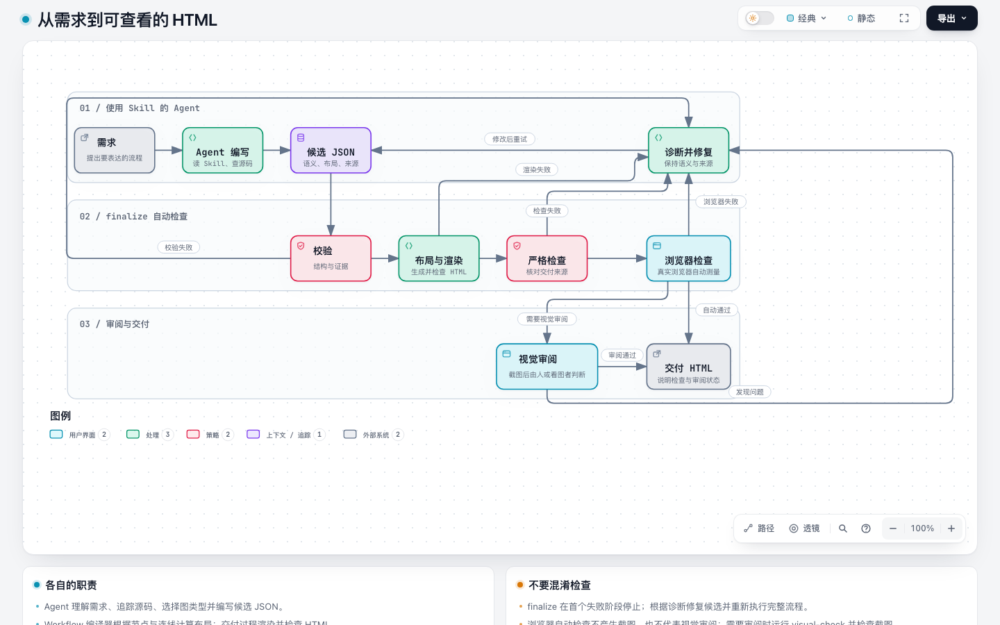
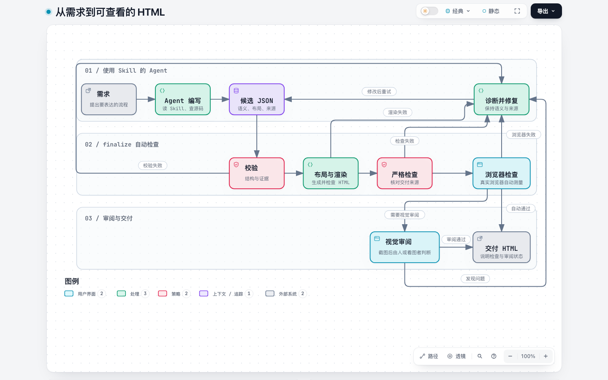
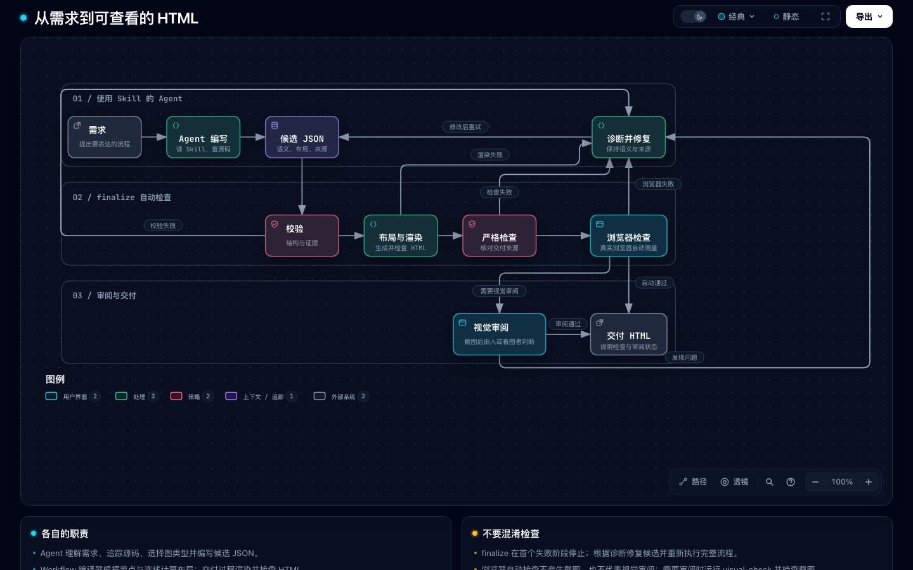
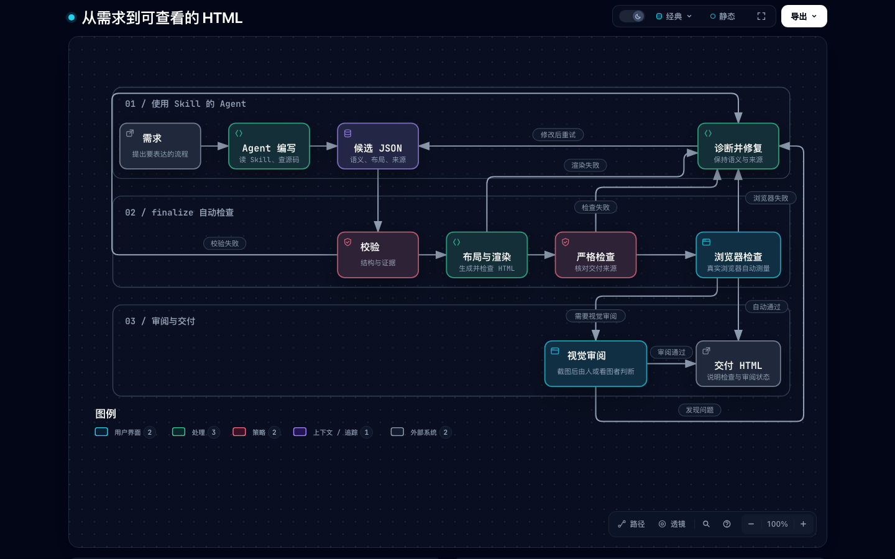
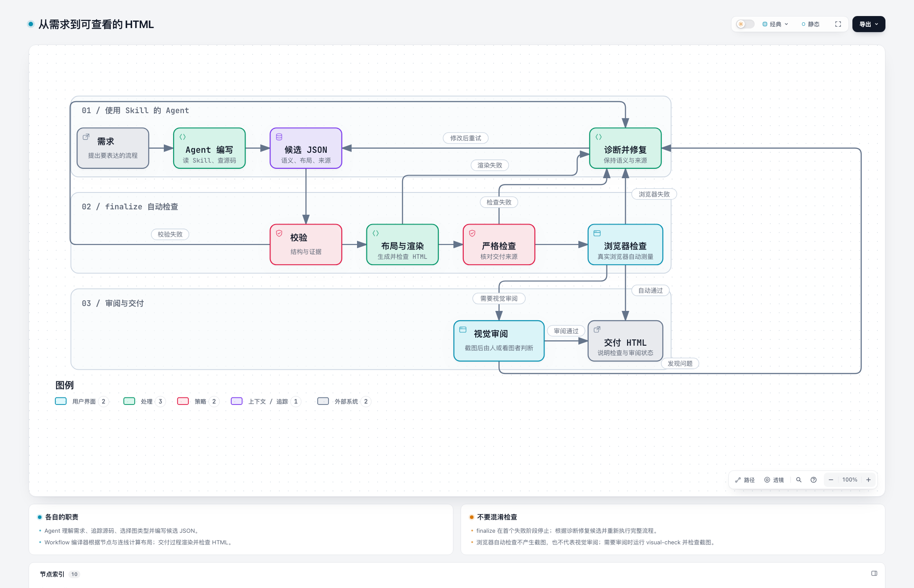
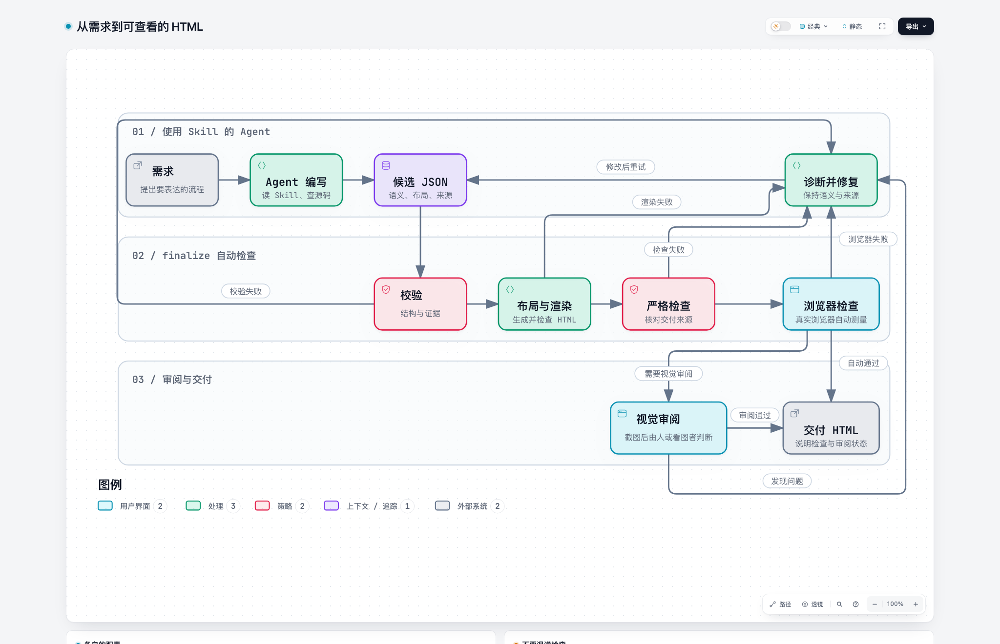
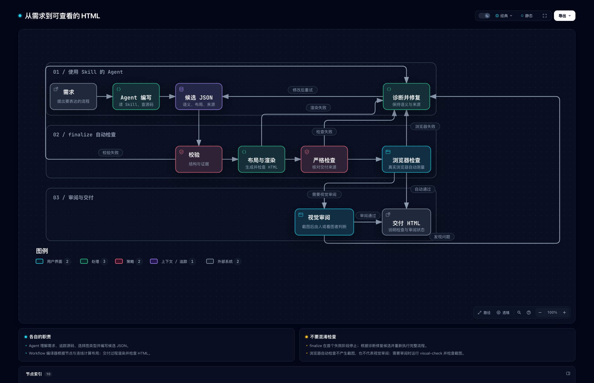
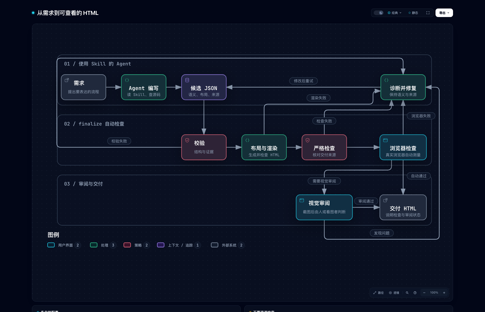

Same full JSON. Only one return route and label changed; width1072→843. Upper-left detour, long retry and fan-in remain. Tests174/174; no human acceptance. Optimization paused.
Evidence and limitations · Before HTML · After HTML · Fixed JSON







